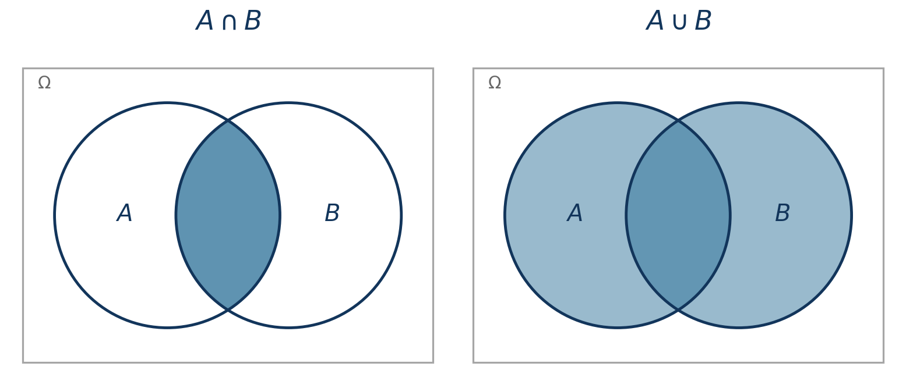
Probabilistic Machine Learning
Probability and Bayesian Inference
Seong-Hwan Jun
Department of Biostatistics and Computational Biology, University of Rochester Medical Center
Where we left off
In the 10,000-door Monty Hall problem, you chose door \(i\) and the host left one other door, \(j\), closed.
- Prior: \(P(H_n)=1/N\) for every door.
- Observation: \(Y=j\), where \(Y\) is the other door the host leaves closed.
- Question: how should \(P(H_n)\) change after observing \(Y=j\)?
\[ P(H_n\mid Y=j) \propto P(Y=j\mid H_n)P(H_n). \]
The host’s rule supplies the likelihood. Today we build the probability machinery behind this update, then use the same machinery in a graphical model.
Goals
- Distinguish outcomes, events, probabilities, and random variables.
- Compute a posterior from a prior and likelihood.
- Derive the Beta–Bernoulli update and its posterior prediction.
- Read a Bayesian network factorization and update beliefs by conditioning.
- Explain why exact inference becomes a computational problem.
Part I: Review of probability theory and Bayes
Outcomes and events
Probability lives on a triple \((\Omega, \mathcal F, P)\). The first two pieces are sets; the third is a function.
- \(\Omega\), the sample space: the set of all possible outcomes. An outcome \(\omega \in \Omega\) is one complete result of the experiment. Exactly one \(\omega\) occurs.
- \(\mathcal F\), the collection of events. An event \(A \in \mathcal F\) is a subset of \(\Omega\), \(A \subseteq \Omega\). “\(A\) occurred” means \(\omega \in A\).
- \(\mathcal F\) is closed under complement and countable unions and intersections, so NOT \(A\), \(A\) OR \(B\), and \(A\) AND \(B\) are events whenever \(A\) and \(B\) are. This is what lets probability extend logic.
Roll a die once.
| outcome | \(\omega = 3\) |
| sample space | \(\Omega = \{1,2,3,4,5,6\}\) |
| event “even” | \(A = \{2,4,6\}\) |
| event “at least 5” | \(B = \{5,6\}\) |
| \(A\) AND \(B\) | \(A \cap B = \{6\}\) |
| NOT \(A\) | \(A^c = \{1,3,5\}\) |
An outcome is a point. An event is a set of points. A single outcome \(\{3\}\) is also an event, but a set with one element, not the element itself.
Probability measure
\(P : \mathcal F \to [0,1]\) assigns a number to every event, not to outcomes directly, subject to
\[ P(\Omega) = 1, \qquad P\Big(\bigcup_{k} A_k\Big) = \sum_k P(A_k) \;\text{ for disjoint } A_1, A_2, \ldots \]
- A measure assigns a size to sets: length, area, count. A probability measure is one with total mass \(1\).
- Everything else, \(P(A^c) = 1 - P(A)\), \(P(A \cup B) = P(A) + P(B) - P(A \cap B)\), monotonicity, follows from the two conditions above.
- For the die, \(P(\{\omega\}) = 1/6\) for each outcome and \(P(A) = |A|/6\). For a continuous \(\Omega\), single outcomes typically have probability \(0\), and probability is carried by intervals. That is why densities appear later.
Notation for the whole course. \(P(\cdot)\) is a probability measure, always applied to an event. \(p(\cdot)\) is a mass function or a density, a function of a value. We write \(P(X = x)\) and \(p(x)\) for the same number when \(X\) is discrete.
Binary logic
Let \(\omega\) denote an outcome and \(A\) an event. Once \(\omega\) is known, the statement “\(A\) occurred” is either true or false:
\[ 1_A(\omega) = \begin{cases} 1, & \omega\in A,\\ 0, & \omega\notin A. \end{cases} \]
Before \(\omega\) is known, \(P(A)\in[0,1]\) represents our uncertainty. A truth value and a probability are different objects.
Probability represents beliefs
Probability theory expresses uncertainty about events and provides rules for combining those uncertainties.
Probability extends logic to situations where truth is uncertain.
Probability calculus: AND and OR
For events \(A, B\),
\[ P(A\cap B) = P(A\mid B)P(B), \]
and
\[ P(A\cup B) = P(A)+P(B)-P(A\cap B). \]
If \(A\) and \(B\) are independent, \(P(A\mid B)=P(A)\) and therefore \(P(A\cap B)=P(A)P(B)\).
Conditioning
For \(P(B)>0\), conditioning restricts attention to outcomes in \(B\) and renormalizes:
\[P(A \mid B) = \frac{P(A\cap B)}{P(B)}.\]
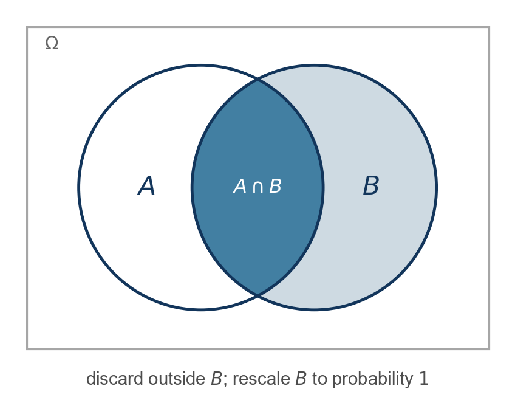
Conditional independence
Events \(A\) and \(B\) are conditionally independent given \(C\) if,
\[P(A\cap B \mid C) = P(A\mid C)P(B\mid C),\]
we write \(A \bot B | C\).
Once \(C\) is known, learning \(A\) provides no additional information about \(B\).
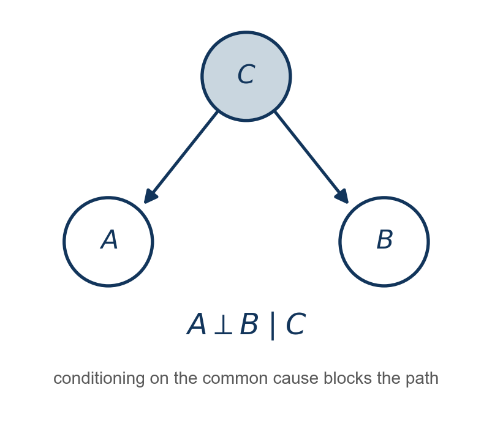
Random variables (RVs)
A random variable represents an uncertain quantity that can take values in some set \(\mathcal{X}\).
\[ X \in \mathcal{X}. \]
- \(\mathcal{X}\) is the set of possible values, or support, of \(X\).
- Examples:
- Coin flip: \(\mathcal{X} = \{\text{H},\text{T}\}\)
- Binary outcome: \(\mathcal{X} = \{0,1\}\)
- Count: \(\mathcal{X} = \{0,1,2,\ldots\}\)
- Continuous measurement: \(\mathcal{X} \subseteq \mathbb{R}\)
- Random variables need not be numerical: categories, graphs, trees, and other structured objects can also be random.
Random variable: a function on outcomes
A random variable is a (measurable) function \(X : \Omega \to \mathcal{X}\) that maps an outcome \(\omega\) to a value \(x = X(\omega)\).
- The randomness is in \(\omega\), not in \(X\). \(X\) is a fixed rule; \(\omega\) is what we do not know.
- Statements about \(X\) are events in disguise: \(\{X \in A\}\) means \(\{\omega \in \Omega : X(\omega) \in A\} = X^{-1}(A)\), and \[ P(X \in A) = P\big(X^{-1}(A)\big). \]
- So \(X\) carries \(P\) from \(\Omega\) to \(\mathcal X\): the distribution of \(X\) is the induced measure \(\nu = P \circ X^{-1}\). From here on we work on \(\mathcal X\) and rarely mention \(\Omega\) again.
Random variable: kinds of \(\mathcal X\)
- \(X\) is real-valued if \(\mathcal{X} \subseteq \mathbb{R}\); a random vector has \(\mathcal X \subseteq \mathbb R^d\), a random matrix \(\mathcal X \subseteq \mathbb R^{d_1 \times d_2}\).
- \(X\) is discrete if \(\mathcal{X}\) is countable. Discrete does not mean numerical: categories, nucleotide states, trees, and graphs are all discrete random variables.
- Non-numerical states are often encoded numerically for computation. We wrote \(1\) for heads and \(0\) for tails without claiming heads is intrinsically the number one.
- Any measurable function of random variables is a random variable: sums, \(\log\), \(\exp\), indicators.
Discrete and continuous distributions
A probability distribution describes our uncertainty about the possible values of a random variable.
For a discrete random variable,
\[ p(x) = P(X = x), \]
and probabilities sum to \(1\):
\[ \sum_{x \in \mathcal X} p(x) = 1. \]
For a continuous real-valued random variable, a density satisfies
\[ p(x)\geq 0, \qquad \int_{\mathcal X} p(x)\,dx = 1. \]
Note
A density is not a probability at a point and may exceed \(1\). Probabilities come from integrating density over sets.
Cumulative distribution function
If \(\mathcal{X} \subseteq \mathbb R\), then
\[ F(x) = P(X \leq x). \]
If \(X\) has density \(p\), then
\[ F(x) = \int_{-\infty}^{x} p(y) dy. \]
If \(X\) is discrete, then
\[ F(x) = \sum_{y \leq x} p(y). \]
The CDF requires an ordered support; a density does not.
Probability theory for random variables
For random variables \(X,Y,Z\) and possible values \(x,y,z\):
- \(p(x,y)\) denotes a joint mass function or density.
- \(p(x\mid y)\) denotes a conditional mass function or density.
- Independence: \(p(x,y)=p(x)p(y)\).
- Conditional independence: \(X\perp Y\mid Z\) when \(p(x,y\mid z)=p(x\mid z)p(y\mid z)\).
- Marginalization: \(p(x)=\sum_y p(x,y)\) for discrete \(Y\), or \(p(x)=\int p(x,y)\,dy\) for continuous \(Y\).
Chain rule
- Product rule: \(p(x,y)=p(x)p(y\mid x)=p(y)p(x\mid y)\).
- Chain rule:
\[p(x_{1:N}) = p(x_1) \prod_{n=2}^{N} p(x_n \mid x_{1:n-1}).\]
Bayes theorem
The product rule can be written in either direction:
\[p(x,y)=p(y\mid x)p(x)=p(x\mid y)p(y).\]
Therefore,
\[ \boxed{p(x\mid y)=\frac{p(y\mid x)p(x)}{p(y)}} \qquad\text{where}\qquad p(y)=\sum_x p(y\mid x)p(x), \]
with the sum replaced by an integral for continuous \(X\).
Expectation
Expectation is a probability-weighted average. For a function \(g\),
\[ \mathbb E[g(X)] = \begin{cases} \displaystyle \sum_{x\in\mathcal X} g(x)p(x), & X \text{ discrete},\\[1em] \displaystyle \int_{\mathcal X} g(x)p(x)\,dx, & X \text{ continuous with density }p. \end{cases} \]
This identity turns integration into averaging, which is the basis of Monte Carlo methods in Lab 2.
Expectation: indicator function
An indicator converts an event into a numerical random variable:
\[\begin{aligned} 1_A(x) = \left\{ \begin{array}{ll} 0 & \text{ if } x \notin A\\ 1 & \text{ if } x \in A. \end{array} \right. \end{aligned}\]Its expectation is the probability of the event:
\[\mathbb{E}[1_A(X)] = P(X \in A).\]
Probability theory to generative models
Our goal is to represent data and hidden causes with a joint distribution.
- Let \(X_O\) denote the observed variables and \(X_H\) the hidden variables.
- Unknown parameters are included in \(X_H\) once we assign them a prior.
\[p(x_O, x_H) = p(x_O \mid x_H)\, p(x_H).\]
In Week 1’s letters: \(x_O = (x, y)\), the inputs and outputs, and \(x_H = (z, \theta)\), the latent variables and the parameters. The subscripts let one formula cover a single parameter, a latent label per observation, or the hidden nodes of a graph. We use whichever is clearer in the moment.
From probability to Bayesian inference
Probability theory vs Statistics
- A generative model describes the forward problem: how parameters and latent variables produce observations.
- Statistical inference solves the inverse problem: use observations to learn about the unknown quantities that could have produced them.
Frequentist vs Bayesian
Both start from a probability model for the data, \(p(y \mid \theta)\). They differ in what the probability statement is about.
- Frequentist inference treats \(\theta\) as a fixed unknown number. Probability attaches to the procedure: how an estimator \(\hat\theta(y)\) or an interval would behave over hypothetical repetitions of the experiment. A 95% confidence interval is a property of the rule that produced it, not a statement about where \(\theta\) is.
- Bayesian inference puts the probability on \(\theta\) itself. The posterior \(p(\theta \mid y)\) is a distribution over the unknown, conditioned on the data actually observed, once. “\(\theta\) lies in \([0.6, 0.7]\) with probability \(0.9\)” is a legitimate sentence.
For the coin: the frequentist reports \(\hat\theta = 0.65\) with standard error \(\sqrt{\hat\theta(1-\hat\theta)/N} \approx 0.05\), which describes how \(\hat\theta\) would scatter across other sets of \(100\) flips. The Bayesian reports \(\text{Beta}(66, 36)\), which describes where \(\theta\) is given these \(100\) flips.
The Bayesian answer is the more direct one: it is about the quantity we asked about.
Components of Bayesian statistics
- A prior distribution over unknown quantities.
- A likelihood: the data model viewed as a function of those unknown quantities.
- A posterior distribution obtained by conditioning on the observations.
Prior specifies initial belief on the possible values of the hidden variables, expressed via a distribution.
The posterior serves to update the belief after having seen the data.
Bayes theorem
\[\begin{aligned} p(x_H \mid x_O) &= \frac{p(x_O, x_H)}{p(x_O)} \\ &= \frac{p(x_O \mid x_H)\, p(x_H)}{p(x_O)}. \end{aligned}\]- \(p(x_H \mid x_O)\): posterior
- \(p(x_H)\): prior
- \(p(x_O)\): marginal likelihood of the observed data, \(\displaystyle\int p(x_O \mid x_H)\, p(x_H)\, dx_H\).
- \(p(x_H, x_O)\): joint distribution.
- \(p(x_O \mid x_H)\): likelihood, when viewed as a function of \(x_H\) with \(x_O\) fixed.
In the coin flip that follows, \(x_H = \theta\) and \(x_O = y_{1:N}\). In Part II, \(x_H\) is the set of hidden nodes of a graph. The formula does not change.
Coin flip: the model
Let \(Y_n=1\) denote heads and \(Y_n=0\) tails. Conditional on the probability of heads \(\theta\),
\[ Y_n\mid\theta \sim \operatorname{Bernoulli}(\theta). \]
Because \(\theta\in[0,1]\), we use a Beta prior:
\[ \theta\sim\operatorname{Beta}(a,b). \]
Choosing \(a=b=1\) gives a uniform prior over \(\theta\). A fair coin is the particular value \(\theta=0.5\); the uniform prior does not assume the coin is fair.
Coin flip: as a graphical model
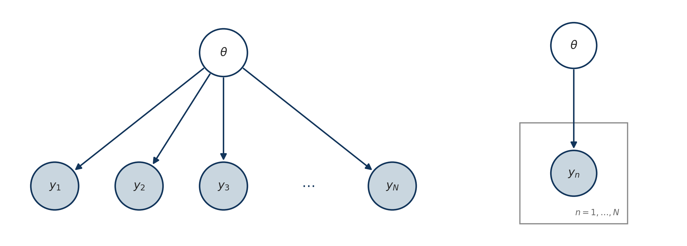
Coin flip: the prior
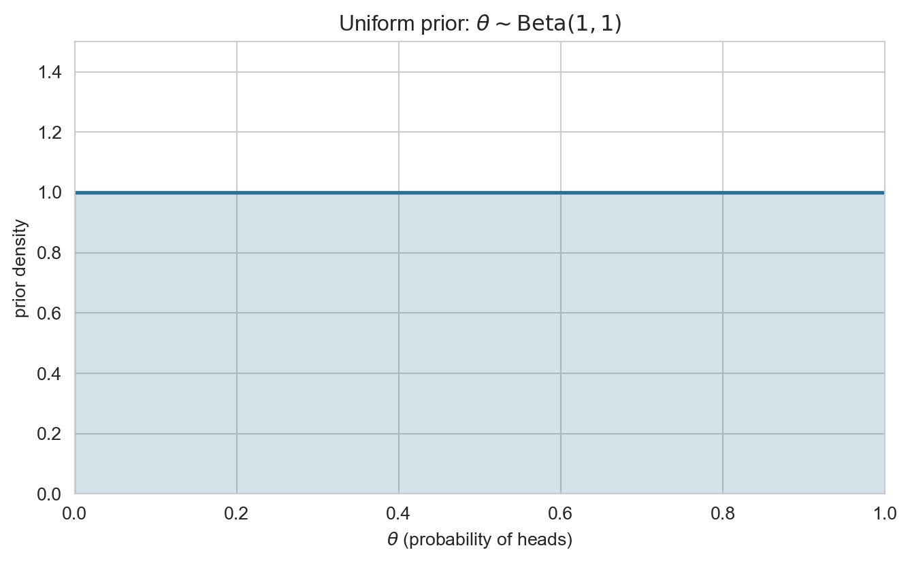
Coin flip: simulating data
N = 100, heads = 65, tails = 35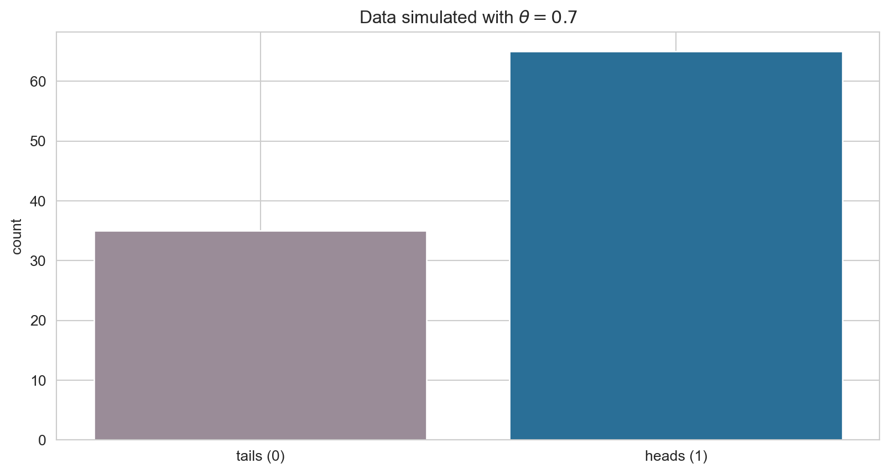
Coin flip: what is the posterior?
Compute the posterior:
\[ p(\theta \mid y_{1:N}) = \frac{\left[\prod_{n=1}^{N}p(y_n\mid\theta)\right]p(\theta)} {p(y_{1:N})}. \]
How?
Coin flip: the numerator
Let \(s=\sum_{n=1}^{N}y_n\) be the number of heads. The numerator is
\[ \begin{aligned} p(y_{1:N}\mid\theta)p(\theta) &= \left[\prod_{n=1}^{N}p(y_n\mid\theta)\right]p(\theta) \\ &= \theta^{s}(1-\theta)^{N-s} \frac{\theta^{a-1}(1-\theta)^{b-1}}{B(a,b)} \\ &= \frac{1}{B(a,b)} \theta^{a+s-1}(1-\theta)^{b+N-s-1}. \end{aligned} \]
This is the kernel of a Beta distribution with parameters \(\tilde a=a+s\) and \(\tilde b=b+N-s\).
Coin flip: the denominator
Denominator (marginal likelihood):
\[ \begin{aligned} p(y_{1:N}) &= \int_0^1 p(y_{1:N}\mid\theta)p(\theta)\,d\theta \\ &= \frac{1}{B(a,b)} \int_0^1 \theta^{a+s-1}(1-\theta)^{b+N-s-1}\,d\theta. \end{aligned} \]
Coin flip: the constant cancels
So the posterior is,
\[ \begin{aligned} p(\theta\mid y_{1:N}) &= \frac{\theta^{a+s-1}(1-\theta)^{b+N-s-1}} {\int_0^1 \theta^{a+s-1}(1-\theta)^{b+N-s-1}\,d\theta}. \end{aligned} \]
\(B(a, b)\) cancels.
The denominator is a constant with respect to \(\theta\), but what is it?
Coin flip: recognising the Beta function
Beta function:
\[ B(a, b) = \int_{0}^{1} \theta^{a-1} (1 - \theta)^{b-1} d\theta. \]
The denominator:
\[ \int_0^1 \theta^{a+s-1}(1-\theta)^{b+N-s-1}\,d\theta, \]
so the denominator is \(B(a+s,b+N-s)\). Therefore,
\[ \boxed{\theta\mid y_{1:N}\sim\operatorname{Beta}(a+s,b+N-s)} \]
and
\[ p(y_{1:N})=\frac{B(a+s,b+N-s)}{B(a,b)}. \]
Note
This is the probability of the observed sequence \(y_{1:N}\). If the observation were only the count \(S=s\), its probability would also include the binomial coefficient \(\binom Ns\).
Coin flip: prior and posterior
Posterior parameters: alpha = 66, beta = 36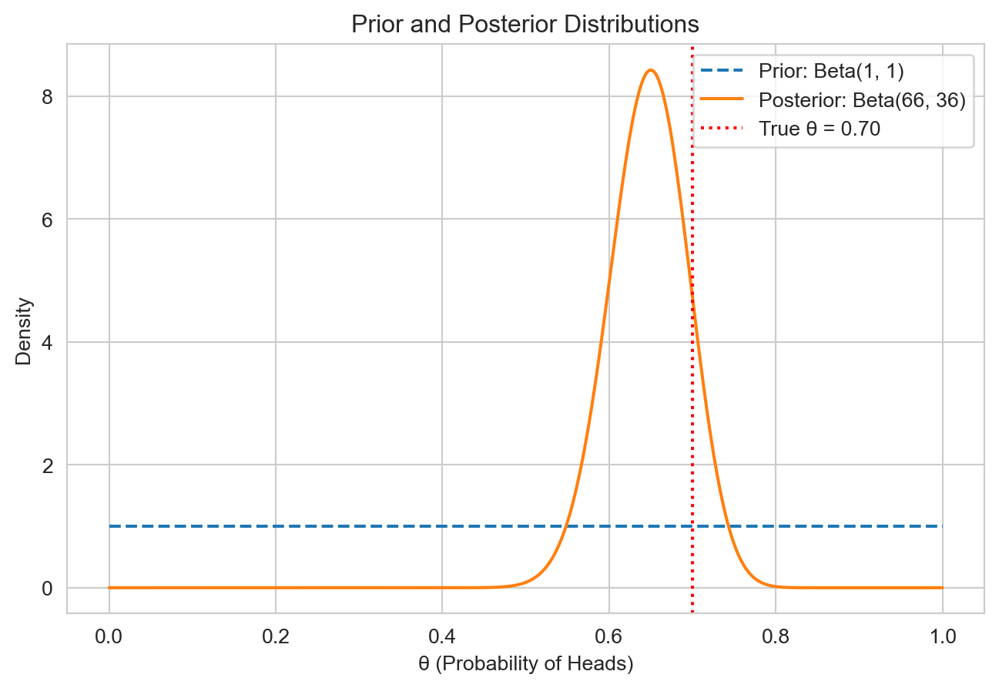
Coin flip: posterior prediction
Week 1 separated inference from prediction. The posterior answers the inference question; averaging over it answers the predictive question:
\[ \begin{aligned} P(Y_{\mathrm{new}}=1\mid y_{1:N}) &= \int_0^1 P(Y_{\mathrm{new}}=1\mid\theta) p(\theta\mid y_{1:N})\,d\theta \\ &= \mathbb E[\theta\mid y_{1:N}] = \frac{a+s}{a+b+N}. \end{aligned} \]
For the seeded data, this is \(66/102\approx0.647\). It predicts the next observation while accounting for uncertainty in \(\theta\), rather than simply plugging in an assumed value.
Coin flip: yesterday’s posterior is today’s prior
Posterior parameters: alpha = 784, beta = 318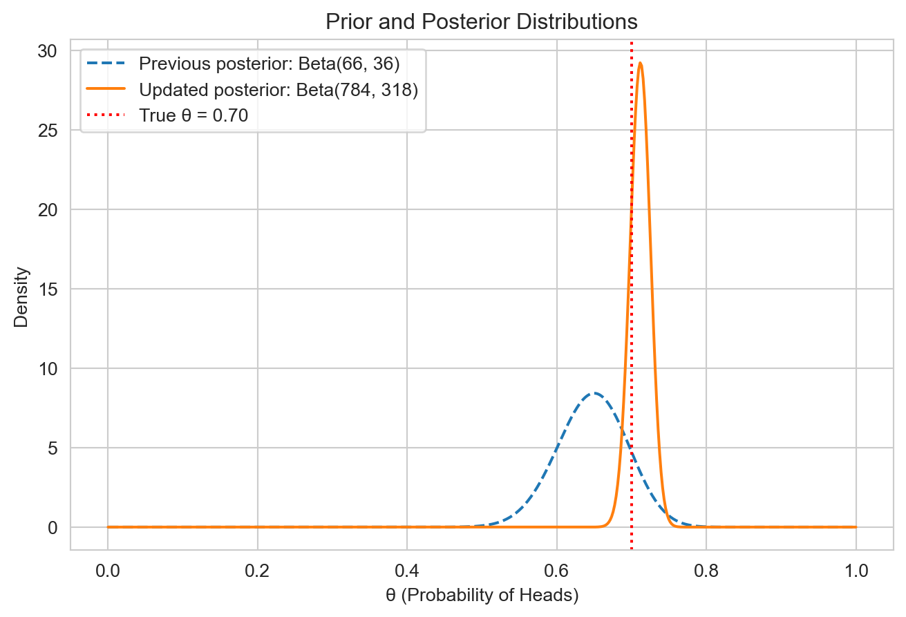
Coin flip: what we learned
- Bernoulli likelihood.
- Beta prior.
- Beta posterior: update the two parameters by adding heads and tails.
- Closed-form marginal likelihood and posterior prediction.
Is it true that the prior and posterior are always in the same family?
What do we do if the closed form for marginal is not available?
The coin separates two kinds of uncertainty
- Epistemic uncertainty concerns quantities we could learn more about: an unknown parameter, latent state, or omitted mechanism. More or better data may reduce it.
- Aleatoric uncertainty is the variation our model leaves in an outcome even when its inputs and parameters are known. It is represented by the observation distribution.
For the coin, uncertainty about \(\theta\) is epistemic; variation in the next flip conditional on \(\theta\) is aleatoric. Both are probabilities conditional on information, so this distinction does not require claiming that randomness is an intrinsic property of the coin.
Monty Hall: finishing Week 1
The host’s protocol is the likelihood
With \(N=10{,}000\), you chose door \(i=1\) and the host left door \(j=387\) closed. Let \(H_n\) mean that the car is behind door \(n\), and let \(Y\) be the other door left closed.
\[ P(H_n\mid Y=j) = \frac{P(Y=j\mid H_n)P(H_n)}{P(Y=j)}, \qquad P(H_n)=\frac1N. \]
The host knows where the car is. If it is behind your door, the host chooses uniformly which other door to leave closed; if it is behind another door, the host must leave that door closed.
What are the three possible values of \(P(Y=j\mid H_n)\)?
- Let \(i\) denote the door selected by the contestant, then \(P(\text{Door $j$ is unopened} | H_i) = 1/(N-1)\). The show host randomly selects a door to not open.
- If car is behind door \(j = 387\) (i.e., \(H_j\) is true), \(P(\text{Door $j$ is unopened} | H_j) = 1\).
- For all other doors, \(n \notin \{i, j\}\), \(P(\text{Door $j$ is unopened} | H_n) = 0\).
Therefore, the posterior is,
\[ \begin{aligned} P(H_i | Y = j) &\propto \frac{1}{N-1} \frac{1}{N} \\ P(H_j | Y = j) &\propto \frac{1}{N} \\ P(H_n | Y = j) &= 0 \text{ for } n \notin \{i, j\}. \end{aligned} \]
The denominator sums over all \(N\) hypotheses, but only two contribute:
\[ P(Y = j) = \sum_{n=1}^{N} P(Y = j \mid H_n) \, P(H_n) = \underbrace{\frac{1}{N-1} \cdot \frac{1}{N}}_{n \, = \, i} \; + \; \underbrace{1 \cdot \frac{1}{N}}_{n \, = \, j} = \frac{1}{N}\left(\frac{1}{N-1} + 1\right) = \frac{1}{N-1}. \]
Therefore,
\[ \begin{aligned} P(H_i | Y = j) &= \frac{1}{N} = 1/10{,}000 \\ P(H_j | Y = j) &= \frac{N-1}{N} = 9{,}999/10{,}000 \\ P(H_n | Y = j) &= 0 \text{ for } n \notin \{i, j\}. \end{aligned} \]
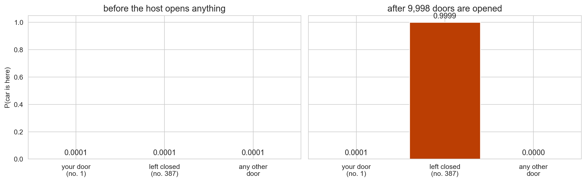
The host’s 9,998 choices were not free. Almost all of that constrained information flows into one door.
Reading before Part II
Part I’s examples had one hidden variable. Part II moves to a graph of them, and two ideas carry the day. Read ahead in Murphy:
- Directed graphical models and what they imply about independence. PML2 §4.2, in particular §4.2.4 Conditional independence properties: d-separation and the Bayes ball algorithm. We will run the algorithm in class.
- Belief propagation, the algorithm the first half of this course builds toward. PML2 §9.2 Belief propagation on chains (the forwards-backwards algorithm) and §9.3 Belief propagation on trees (the sum-product algorithm). Skim now; we return to it in weeks 4 through 6.
Part II: graphical models and computation
A belief network
Your grass is wet this morning. Did it rain?
- Two things could have wet the grass: it rained (\(R\)), or the sprinkler was on (\(S\)).
- Both depend on whether it was cloudy (\(C\)) – rain is more likely under cloud, and a sensible sprinkler timer is less likely to run.
- You observe only the wet grass (\(W\)). Everything else is hidden.
The model
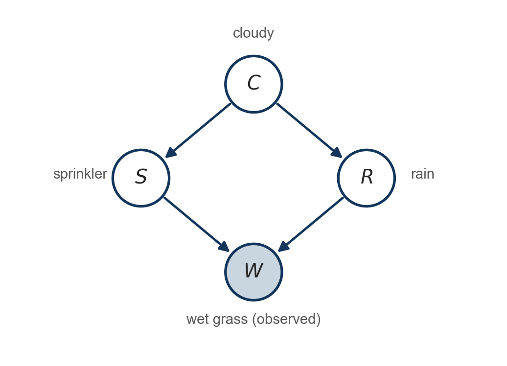
Read the picture as four local statements, one per node:
- \(C\) has no parents: an unconditional probability of a cloudy day.
- \(S\) and \(R\) each depend on \(C\) only.
- \(W\) depends on \(S\) and \(R\), and on nothing else once those are known.
The arrows carry no numbers yet. The graph alone is a set of independence claims; the numbers come next.
Filling in the numbers
Each node gets a table: a prior for the root, a conditional probability table (CPT) for everything else.
| \(P(C{=}1)\) |
|---|
| 0.5 |
Cloudy is a coin flip. The root tilts nothing, and the marginal probability of rain also comes out to \(0.5\).
| \(C\) | \(P(S{=}1 \mid C)\) | \(P(R{=}1 \mid C)\) |
|---|---|---|
| 0 | 0.5 | 0.2 |
| 1 | 0.1 | 0.8 |
Cloud makes rain four times more likely and the sprinkler five times less likely. Through \(C\), sprinkler and rain are negatively associated.
| \(S\) | \(R\) | \(P(W{=}1 \mid S,R)\) |
|---|---|---|
| 0 | 0 | 0.00 |
| 0 | 1 | 0.90 |
| 1 | 0 | 0.90 |
| 1 | 1 | 0.99 |
A noisy-OR: each cause wets the grass independently with probability \(0.9\), so both give \(1 - 0.1^2\). Grass never gets wet on its own, so \(W = 1\) means at least one cause fired.
The joint factorizes
Each variable depends only on its parents:
\[ P(C, S, R, W) = \underbrace{P(C)}_{1} \; \underbrace{P(S \mid C)}_{2} \; \underbrace{P(R \mid C)}_{2} \; \underbrace{P(W \mid S, R)}_{4} \]
- Nine numbers, against fifteen for an unconstrained joint on four binary variables.
- With \(n\) variables the joint needs \(2^n - 1\) numbers; a factorization with bounded parents needs \(O(n)\).
- This is the modelling language for the rest of the course. Everything after today is a bigger version of this picture.
Exercise: Write down the whole joint
Four binary variables, so sixteen rows.
C S R W P
0 0 0 0 0.20000
0 0 0 1 0.00000
0 0 1 0 0.00500
0 0 1 1 0.04500
0 1 0 0 0.02000
0 1 0 1 0.18000
0 1 1 0 0.00050
0 1 1 1 0.04950
1 0 0 0 0.09000
1 0 0 1 0.00000
1 0 1 0 0.03600
1 0 1 1 0.32400
1 1 0 0 0.00100
1 1 0 1 0.00900
1 1 1 0 0.00040
1 1 1 1 0.03960
sums to 1.000000Exercise: Conditioning is selecting rows and renormalizing
P(R=1) = 0.5000 <- prior
P(W=1) = 0.6471
P(R=1 | W=1) = 0.7079 <- the grass is wetWet grass raises our belief in rain from \(0.50\) to \(0.71\). That is Bayes’ theorem, applied to a table.
Exercise: Observing the sprinkler reverses the update
P(R=1) = 0.5000
P(R=1 | W=1) = 0.7079
P(R=1 | W=1, S=1) = 0.3204 <- sprinkler was onBelief in rain climbs to \(0.71\), then collapses to \(0.32\) – below the prior – once we learn the sprinkler was on. Two things pushed it down: the sprinkler already accounts for the wet grass, and a running sprinkler is itself evidence of a clear sky.
Explaining away
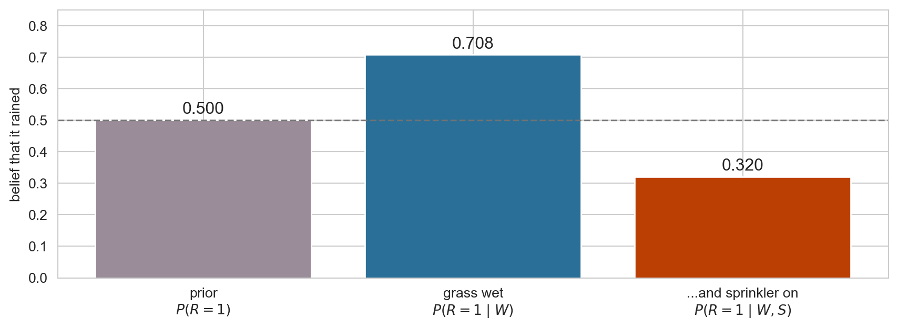
The dashed line is the prior. Evidence can move a belief below where it started.
Two ways evidence flows
common cause -- C makes S and R dependent:
P(S=1) = 0.3000
P(S=1 | R=1) = 0.1800 <- differs, so dependent
P(S=1 | C=1) = 0.1000
P(S=1 | R=1, C=1) = 0.1000 <- equal, so independent given Ccommon effect -- W makes S and R dependent again:
P(R=1 | C=1) = 0.8000
P(R=1 | C=1, S=1) = 0.8000 <- still equal
P(R=1 | C=1, W=1) = 0.9758
P(R=1 | C=1, W=1, S=1) = 0.8148 <- now differsThe two patterns
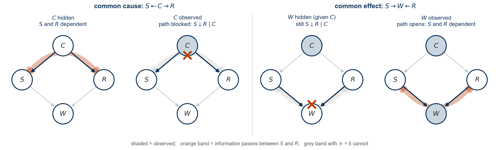
Important
- Common cause (\(S \leftarrow C \rightarrow R\)): \(S\) and \(R\) are dependent, and conditioning on \(C\) removes the dependence.
- Common effect (\(S \rightarrow W \leftarrow R\)): \(S\) and \(R\) are independent given \(C\), and conditioning on \(W\) creates dependence.
Conditioning does not simply “add information” – depending on where a variable sits in the graph, observing it can either break a dependence or manufacture one. The general rule is d-separation, and it lets us read independence off a picture instead of grinding through the algebra. The next few slides make that rule mechanical.
Bayes ball: reading independence off the graph
Three building blocks
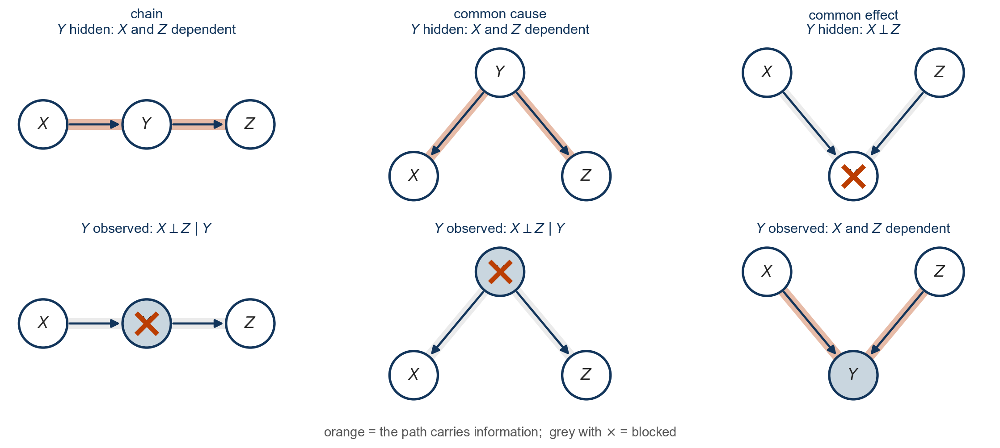
Every path through a directed graph is built from these three. The chain and the common cause behave alike: the middle node carries information until it is observed. The common effect is the mirror image. Two other names you will meet: a common-cause node \(X \leftarrow Z \rightarrow Y\) is a fork, and a common-effect node \(X \rightarrow Z \leftarrow Y\) is a collider, because two arrowheads meet at it. We use the names interchangeably.
d-separation
Definition
\(X \perp Y \mid Z\) holds in the graph if every path between \(X\) and \(Y\) is blocked given \(Z\). A path is any sequence of edges joining \(X\) and \(Y\), arrow directions ignored; it is blocked given \(Z\) when it passes through
- a chain or common-cause node that is in \(Z\), or
- a collider (common-effect node) such that neither it nor any of its descendants is in \(Z\).
- Note the asymmetry. Chains and forks (common-cause nodes) are blocked by being in \(Z\); a collider is blocked by being out of \(Z\). In \(X \rightarrow Z \leftarrow Y\), conditioning on nothing blocks the path and conditioning on \(Z\) opens it.
- The descendant clause is the one people forget: observing a downstream effect of a collider opens it, just as observing the collider itself does.
What d-separation guarantees
d-separation is a statement about the arrows alone. It never looks at the numbers.
- Soundness. If \(X\) and \(Y\) are d-separated given \(Z\) in the graph, then \(X \perp Y \mid Z\) holds for every assignment of numbers to the conditional probability tables: any \(P(C)\), any \(P(S \mid C)\), any \(P(R \mid C)\), any \(P(W \mid S, R)\). Change \(0.8\) to \(0.3\) in the rain table and the independence survives.
- We verified two of these by brute force with the sprinkler’s particular numbers. The theorem says the numbers were irrelevant; the arrows had already decided.
- The converse fails. An open path means \(X\) and \(Y\) can be dependent, not that they must be. Particular numbers can create extra independences the graph does not show. Set \(P(R = 1 \mid C = 0) = P(R = 1 \mid C = 1)\) and rain becomes independent of cloud despite the arrow between them. Such coincidences are called unfaithful, and we assume them away.
Checking every path by hand is error-prone. Bayes ball turns the definition into a mechanical procedure.
Bayes ball: the rules
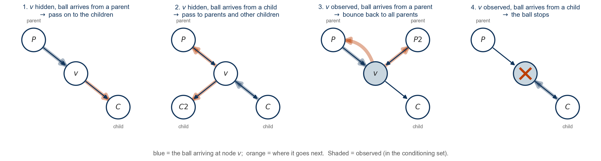
Shade the nodes in \(Z\). Drop a ball at \(X\) and let it travel by these four rules, applied at each node \(v\) it arrives at. If the ball never reaches \(Y\), then \(X \perp Y \mid Z\).
Exercise: a slippery path
Add one node. \(G\): the path is slippery, a child of \(W\) only.

Run the ball in your head. Which of these hold?
- \(S \perp R \mid G\)
- \(C \perp G \mid W\)
- \(S \perp R \mid C, G\)
Exercise: answers
check (the algorithm behind the left column is Assignment 1, Problem 3)
parents2 = {**parents, "G": ["W"]}
cpt2 = {**cpt, "G": {(0,): 0.05, (1,): 0.7}}
tbl2 = make_joint(parents2, cpt2)
print(f"{'claim':<16}{'Bayes ball':<14}{'joint table'}")
for X, Y, g in [("S", "R", ("G",)), ("C", "G", ("W",)), ("S", "R", ("C", "G"))]:
print(f"{fmt(X, Y, g):<16}{str(d_separated(parents2, X, Y, g)):<14}{independent_in_table(tbl2, X, Y, g)}")claim Bayes ball joint table
S ⊥ R | G False False
C ⊥ G | W True True
S ⊥ R | C, G False False- 1 fails, and \(G\) is beside the point. The fork at \(C\) is still open: \(C\) is unshaded, so the ball goes \(S \to C \to R\) by rule 2 exactly as it did with nothing shaded. Shading a node far downstream cannot block a path it does not lie on. Nothing about \(G\) was needed.
- 2 holds. Both routes from \(C\) to \(G\) run through \(W\) as a chain, and \(W\) is shaded (conditioned on).
- 3 fails, and this one is subtle. Shading \(C\) closes the fork, which is the only route that mattered in claim 1. Now \(G\) matters: it is a descendant of the collider \(W\). The ball goes \(S \to W\) (rule 1), on to \(G\) (rule 1), bounces off the shaded \(G\) back to \(W\) (rule 3), and arrives at the unshaded \(W\) from a child, so rule 2 sends it up to \(R\). Knowing the path is slippery is weak evidence the grass is wet, and that is enough to make sprinkler and rain compete. Forget the descendant clause and you get this one wrong.
A collider is a dead end for a ball coming from above, unless something below it is observed, in which case the ball can turn around and come back up.
What Bayes ball buys you
- Independence without arithmetic. The verdicts depend on the arrows alone, so they hold for any tables you later fit to data.
- A node’s Markov blanket. Shade a node’s parents, children and co-parents, and the ball cannot leave. That set is exactly what Gibbs sampling conditions on when we get to MCMC.
- Where messages need to go. Belief propagation sends information only along open paths. Bayes ball tells you which paths those are before you write a single update.
Structure should make inference cheaper
- We updated beliefs by writing out the joint, selecting rows and renormalizing. Always correct, and always \(O(2^n)\).
- With sixteen rows it is trivial. With fifty variables it is \(2^{50}\) rows, and the table cannot be written down.
- Yet the model was specified with only nine numbers. The structure that made the model compact should also make the computation cheap.
- Exploiting that structure – passing local messages along graph edges instead of enumerating the joint – is belief propagation, and it is where this course is going.
For now, note what we did: a prior, a likelihood, and a renormalization. Everything else is scale.
What to carry into Week 3
- A generative model specifies a joint distribution; inference reverses it by conditioning.
- Bayes’ theorem is likelihood times prior, then normalize.
- Marginalization supplies the normalizing constant and posterior predictions.
- Graph structure records conditional independence and can turn an exponential computation into local ones.
- Conjugacy sometimes gives a closed form. Otherwise we need exact algorithms, sampling, or optimization.
Next week, the unobserved quantity is a mixture label \(z_i\). Its posterior probability becomes an EM responsibility—the same belief update, repeated for every observation.
Reading for Week 3: mixture models and EM
Next week the unknown is a cluster label \(z_n\) per observation, and the posterior over it is computed by the same update as the coin. Read ahead in Murphy:
- Gentler and more thorough. Bishop, Pattern Recognition and Machine Learning (2006), Ch. 9 Mixture Models and EM: §9.2 mixtures of Gaussians with the EM updates derived step by step in §9.2.2, §9.3 EM as a latent-variable method with responsibilities, and §9.4 the general algorithm and why the likelihood never decreases. If Murphy feels terse, start here. Free PDF from the author’s page.
- The EM algorithm. PML1 §8.7 Bound optimization, §8.7.2 The EM algorithm, which derives EM as a lower bound on the log likelihood; PML1 §21.4 Clustering using mixture models applies it to Gaussians. In PML2 the derivation is §6.5.3.
- One volume. MLaPP Ch. 11, Mixture models and the EM algorithm, covers both.
As you read, watch for the responsibility \(r_{nk} = p(z_n = k \mid y_n, \theta)\). It is a posterior, computed by Bayes’ theorem exactly as today, and every step of EM is built from it.
Appendix: Computing posteriors (conjugacy and the exponential family)
The normalizing constant is the bottleneck
Bayesian inference means computing the posterior \(p(x_H \mid x_O)\). Why is this difficult?
\[\begin{aligned} p(x_H \mid x_O) = \frac{p(x_O \mid x_H)\, p(x_H)}{p(x_O)}, \qquad p(x_O) = \int p(x_O \mid x_H)\, p(x_H)\, dx_H. \end{aligned}\]- The numerator is the generative model evaluated at the data: cheap.
- The denominator sums or integrates the numerator over every value of every hidden variable. For the sprinkler that was sixteen rows; for \(N\) latent labels with \(K\) states it is \(K^N\) terms; for a continuous \(\theta\) it is an integral with no closed form in general.
- Everything from here to the end of the course is a way of computing, avoiding, or approximating \(p(x_O)\).
Conjugacy
- A prior is conjugate to a likelihood when the posterior belongs to the same family as the prior.
- Data update the parameters of that family rather than changing its functional form.
- Beta–Bernoulli is the example we just derived: \((a,b)\mapsto(a+s,b+N-s)\).
Conjugacy makes normalization and posterior expectations analytically tractable. It is a property of a prior–likelihood pairing, not of either distribution alone.
When does a conjugate prior exist?
For a regular exponential-family likelihood,
\[ p(y \mid \eta) = h(y)\exp\left(\eta^\top T(y) - A(\eta)\right). \]
- Bernoulli, binomial, Poisson, geometric, normal, gamma, beta, Dirichlet, multinomial and multivariate normal are all members.
- A corresponding natural conjugate-prior form can be constructed. Whether it is proper, and whether its normalizing constant is tractable, still require care.
- The family also underpins generalized linear models and, later in this course, variational inference.
Next: the definition, the Bernoulli written in this form, and the general recipe that turns any such likelihood into a conjugate update. The Beta–Bernoulli from Part I falls out as a special case.
Exponential family: definition
A family of distributions is an exponential family when it can be written
\[ p(y \mid \eta) = h(y)\exp\!\left(\eta^\top T(y)-A(\eta)\right). \]
- \(h(y)\) is the base-measure term.
- \(T(y)\in\mathbb R^D\) is the sufficient-statistic vector.
- \(\eta\) is the natural or canonical parameter.
- \(A(\eta)\) is the log-partition function that makes the distribution integrate or sum to one.
Exponential family: Bernoulli example
\(Y \sim \text{Bernoulli}(\theta)\):
\[ \begin{aligned} p(y | \theta) &= \theta^{y} (1 - \theta)^{1-y} \\ &= \exp(y \log(\theta) + (1 - y) \log(1 - \theta)) \\ &= \exp(T(y)^T \eta), \end{aligned} \]
where
\[ \begin{aligned} T(y) &= (1[y = 1], 1[y = 0]) \\ \eta &= (\log(\theta), \log(1 - \theta)). \end{aligned} \]
Exponential family: why that form is over-complete
An exponential-family representation is minimal when there is no nonzero vector \(c\) for which \(c^\top T(y)\) is constant for every \(y\).
Here,
\[ (1,1)^\top T(y)=1[y=1]+1[y=0]=1, \]
so one statistic is redundant. Removing the redundancy gives a single sufficient statistic and a single unconstrained natural parameter.
Exponential family: minimal Bernoulli
Minimal representation for the Bernoulli:
\[ \begin{aligned} p(y | \theta) &= \exp\left[y \log\left(\frac{\theta}{1 - \theta}\right) + \log(1 - \theta)\right] \\ &= \exp\left(y \eta - \log(1+e^{\eta})\right), \end{aligned} \]
using \(1 - \theta = 1/(1 + e^{\eta})\), so that \(\log(1-\theta) = -\log(1 + e^{\eta})\).
- \(T(y) = y\),
- \(\eta = \log(\theta/(1-\theta))\),
- \(A(\eta) = \log(1 + e^{\eta})\).
The conjugate prior, in general
For \(N\) independent draws from an exponential family, the sufficient statistics add:
\[ \prod_{n=1}^N p(y_n \mid \eta) = \Big[\prod_n h(y_n)\Big] \exp\!\Big(\eta^\top \underbrace{\textstyle\sum_n T(y_n)}_{\text{all the data enters here}} - N A(\eta)\Big). \]
Choose a prior with the same shape in \(\eta\), with two hyperparameters \(\tau\) and \(\nu\):
\[ p(\eta \mid \tau, \nu) \propto \exp\!\big(\eta^\top \tau - \nu A(\eta)\big). \]
Multiply, and the posterior has the same shape with \[ \tau \;\to\; \tau + \sum_n T(y_n), \qquad \nu \;\to\; \nu + N. \]
Read \(\tau\) as sufficient statistics from \(\nu\) imaginary prior observations. Inference is bookkeeping: add the data’s statistics, add the sample size.
Example 1: the coin, again
Minimal Bernoulli: \(\eta = \log\frac{\theta}{1-\theta}\), \(T(y) = y\), \(A(\eta) = \log(1 + e^\eta)\).
The recipe’s prior, written back in terms of \(\theta\) (with the change of variables \(d\eta = d\theta / (\theta(1-\theta))\)):
\[ \exp(\eta\tau - \nu\log(1+e^\eta)) = \frac{(e^\eta)^\tau}{(1+e^\eta)^\nu} = \theta^{\tau}(1-\theta)^{\nu - \tau} \;\;\Longrightarrow\;\; p(\theta) \propto \theta^{\tau - 1}(1-\theta)^{\nu-\tau-1}. \]
That is \(\text{Beta}(a, b)\) with \(a = \tau\) and \(b = \nu - \tau\).
The update \(\tau \to \tau + s\), \(\nu \to \nu + N\) becomes \((a, b) \to (a + s,\; b + N - s)\): exactly the derivation from Part I, with no Beta-function integral in sight. The prior’s \(a + b = \nu\) is its weight in imaginary coin flips.
Example 2: counts with a Gamma prior
Number of events per unit, \(y_n \in \{0, 1, 2, \ldots\}\) (reads per gene, admissions per day, mutations per sample):
\[ y_n \mid \lambda \sim \text{Poisson}(\lambda), \qquad p(y \mid \lambda) = \frac{\lambda^y e^{-\lambda}}{y!} = \frac{1}{y!}\exp\!\big(y \log\lambda - \lambda\big). \]
So \(\eta = \log\lambda\), \(T(y) = y\), \(A(\eta) = e^\eta = \lambda\). The recipe’s prior in terms of \(\lambda\) (Jacobian \(d\eta = d\lambda/\lambda\)):
\[ p(\lambda) \propto \lambda^{\tau - 1} e^{-\nu\lambda} \qquad\text{i.e. } \lambda \sim \text{Gamma}(\text{shape } a = \tau,\; \text{rate } b = \nu). \]
Posterior: \(\lambda \mid y_{1:N} \sim \text{Gamma}\big(a + \sum_n y_n,\; b + N\big)\). The prior is worth \(b\) imaginary units of observation carrying \(a\) events in total; the posterior mean \(\frac{a + \sum y}{b + N}\) is a weighted average of the prior mean \(a/b\) and the sample mean.
Example 2: prior to posterior
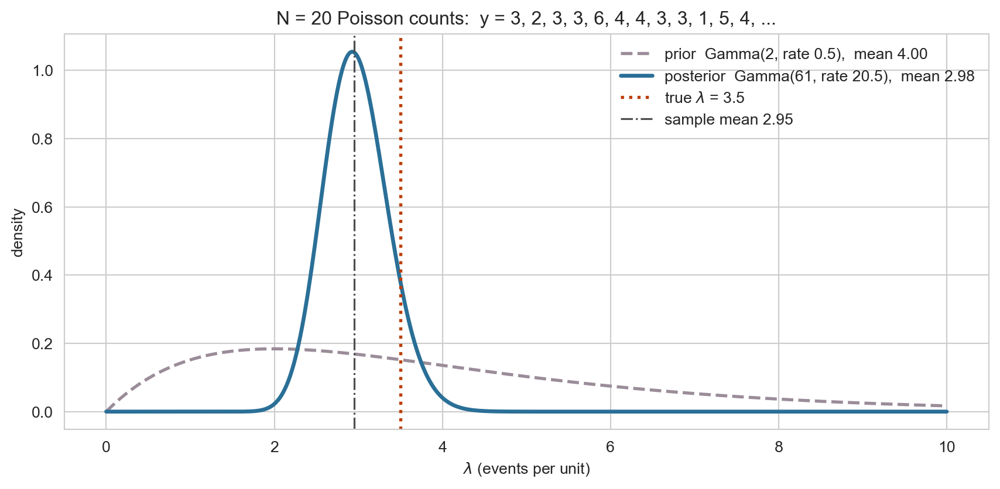
Same picture as the coin: a broad prior, a data-dominated posterior, and the update was two additions. Nothing was integrated. The normalizing constant is the Gamma function, and we never had to look at it.
Who is in the family
Discrete
- Bernoulli, binomial
- Poisson
- Geometric
- Negative binomial (fixed dispersion)
Continuous
- Normal
- Gamma, exponential
- Beta
Multivariate
- Categorical, multinomial
- Dirichlet
- Multivariate normal
- Wishart, inverse Wishart
Nearly every row of the table of conjugate pairs is one instance of the recipe on the previous slides; the few exceptions, such as uniform–Pareto, are conjugate without being exponential families. Not in the family: Student-\(t\), mixtures, and anything whose support depends on the parameter, such as the uniform on \([0,\theta]\).